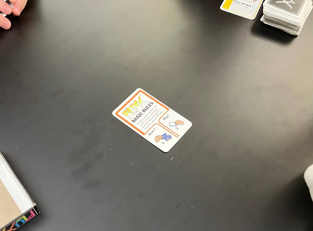
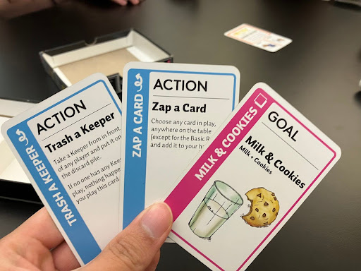
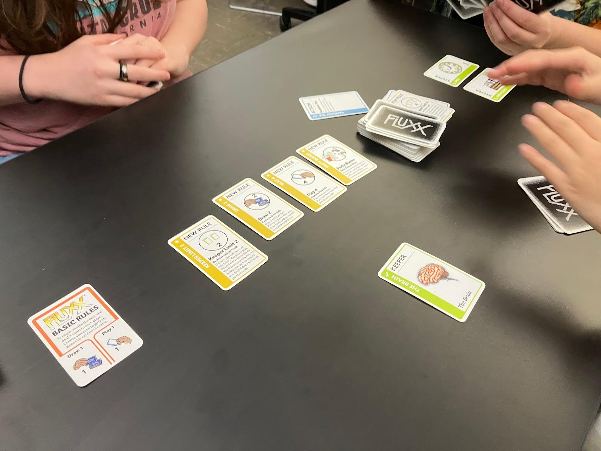
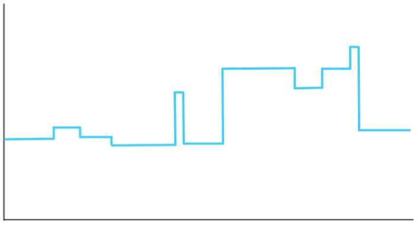
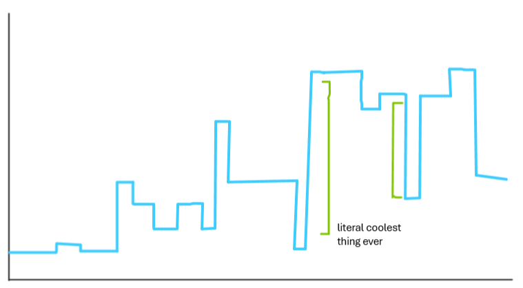

Two days ago, I played the board game Fluxx in class with a few classmates. This edition will feature my session report of that playthrough.
Fluxx is a card game in which the rules of the game can be changed by playing cards. Because of this, the rules of the game are in a state of constant flux, constantly changing in complexity and intensity over the course of the game.
This emergent gameplay is supported by a simple set of basic rules. Play consists of players taking turns drawing cards and playing them (the base amount is play 1 and draw 1). There are four types of cards: Goal, Keeper, New Rule, and Action cards.
The pink Goal cards name a combination of two Keeper cards. The objective of the game is to have two played Keeper cards that match the current goal, upon which the player instantly wins. Only one pink Goal card may be active at a given time; playing a new Goal when one is already active discards the old one.
The green Keeper cards can be played, putting them in front of the player who it belongs to semi-permanently. Each Keeper refers to a unique concept or object, such as Milk, Love, or Money.
New Rule cards are yellow, and are the bread and butter of the game. As their name suggests, playing them adds a new rule to the game, listed on the card. The rules range from standard, such as changing the amount of draws per turn, to strange (you’ll see later). Many Rules can be active at the same time, although playing a Rule that restricts the same aspect as an existing rule replaces the old one. This results in some pretty complex board states as players add new rules, continuing to build and build upon the ruleset.
Finally, the blue Action cards are one-time effects that do whatever the card says. The effects on Action cards have a lot of freedom to do different things, and have the potential to really shake up the game.
… And that's all you need to know to be able to play the game, provided you read all the unique card effects! Time to get into the session report.
The players at our table were, in clockwise order, Drinnie, Quynh, Austin (me!), and Endlessette, none of whom were familiar with the game beforehand. I volunteered to take play-by-play notes from my perspective.
The game setup itself is simple. Put the Basic Rules card in the center, then deal 3 cards to each player and select a player to start. Play then proceeds clockwise from that player. We elected Drinnie as the trailblazer for this expedition into this dark, uncharted territory that was known as Fluxx. I drew my three cards and took a look at them.
The starting setup, with the basic rules card. Next to the deck are a few random cards Endlessette took from the deck as examples to explain card types to us, forming a mini discard pile (we shuffled them back into the deck later).
My starting hand.
Our story begins. The game starts, with four college students excited to see what mysteries this new, nearly 30 year old game has in store for us.
The table starts with the basic rules: draw 1, play 1.
Drinnie:
(1) plays a Keeper card, "The brain"
Quynh:
(1) plays a new rule: draw 2
- draws an extra card to reach 2 cards drawn in turn
My turn:
I draw 2 cards, per the new rule played by Quynh.
- new rule: draw 5. Because a Draw rule (Draw 2) already exists, this replaces the old one.
- keeper: the eye
(1) play draw 5
- I draw 3 extra cards to reach 5 cards drawn, new cards shown below
The cards I drew above.
At this point, we’re all still trying to figure out what’s going on. I’m still trying to take detailed notes, documenting everything I see nicely. I still want to figure out what is even possible in this game.
Endlessette:
(1) new rule: play 4 cards
(2) new rule: party bonus
- if someone has the Party (keeper) card on the table, all players draw and play 1 extra card per turn
(3) action: everybody gets one
- draw 1 card for each player (total 4) and distribute one to each player (she picks who gets what)
- I receive a keeper card, Cookie
(4) action: Let's do that again!
- search through discard pile, take any action or new rule and immediately play it
- picks up draw 2 from discard pile and plays it, replacing draw 5
The board state at the end of round 1, with the action cards not discarded yet.
Wow, Endlessette did a lot! Well, at least I have seven cards from all the drawing I did last round, which should let me take advantage of the new Play 4 that Endlessette just played. I’ve got two nice keepers and the action Zap a Card, which seems quite strong.
Drinnie:
(1) keeper: rocket
(2) keeper: time
(3) rule card: keeper limit 4
- players can have a maximum of 4 keeper cards when it’s not their turn
(4) action: random tax
- take a random card from each other player's hand
- took milk and cookies from my hand
Quynh:
(1) action: rotate hands;
- all players pass hands to the player next to them, with player choosing the direction
- chooses to rotate counter-clockwise
- I get my new hand from endlessette
Man, are you serious? She’s gonna take the Zap a Card and all the cards I used my hard-earned time to draw? That really sucks…
(2) action: zap a card
- choose a card in play, anywhere on the table, and add it to your hand
- (X) initially attempts to take a card from the discard pile, but we argued that the discard pile doesn’t count as “in play”
- instead steals card from drinnie: keeper card, brain
(3) rule: keeper limit 2
(4) keeper: brain
My hand before/after the “rotate hands” action
The board state at this time
Me:
Well, I need to get revenge on Quynh for taking my cards like that. With my newly acquired Hand Limit 0 rule, I can get rid of all her cards >:)
draw 2:
- a keeper, toaster
- a rule, goal mill
(1) new rule: goal mill
- during their turn, as a free action, players may discard as many goal cards as they choose, and draw that many cards
(2) new rule: hand limit 0
(3) keeper: television
(4) keeper: sleep
Endlessette:
(1) action: take another turn
- take another turn after this turn
(2) action: empty the trash
- start a new discard pile, shuffle the rest of the discard pile back into the draw pile
she runs out of cards and has to end her turn
This extra turn effect is insanely good, and is used to great effect in another player's recounting of a Fluxx game, where they win in one turn.
Endlessette (extra turn):
(1) goal: bedtime: sleep + time
(2) new rule: no-hand bonus
- if a player has an empty hand, draw 3 before current draw rule
out of cards, end turn
The last two turns really show the disadvantage of not having sufficient drawing power to match the amount of cards you can play (like playing an aggro deck filled with low-cost cards in a card game and running out of steam). If the draw rule were greater, Endlessette certainly could have done a lot more with her extra turn here.
Current rules: draw 2, play 4, party bonus, keeper limit 2
It's important to always be thinking about ways you can win. I have sleep, and drinnie has time... maybe I can draw a Zap to steal drinnie's time card and win with the current goal, bedtime?
Drinnie:
draw 3 from the no-hand bonus + draw 2 from current rule
(1) action: let's simplify! discard up to half rounded up of the new rule cards in play
- removed hand limit 0, keeper limit 2
(Free action): discards hippyism (peace + love) to draw another card...
- Hope you remembered Goal Mill!
(2) keeper: milk
(3) new rule: get on with it (free action!)
- before final play, if not empty handed, a player may discard their entire hand and draw 3 cards, and immediately end their turn
(4) new rule: rich bonus
- the player with the most Keepers on the table may play 1 extra card during their turn; nobody receives the bonus if tied
(X) drinnie tries to use the free action from Get On With It!, discarding hand and drawing 3 cards, but Endlessette points out that she has already ended her turn and made her final play. they resolve this somehow, I’m not sure (I’m taking notes)
Quynh:
draws like drinnie did
(1) new rule: recycling (free action)
- once during their turn, players may discard one of their Keepers and draw 3 extra cards
(bonus) uses recycling: discards brain keeper and draws 3 extra cards
(2) action: zap!
- takes Drinnie’s time keeper
- Where does she keep getting these Zaps???
(3) new rule: keeper limit 4
(4) action: random tax (takes only one card from drinnie because endlessette and I have no cards)
The current rules and goal
Me:
draw 5 (my hand was empty)
- Action, rules reset: discard all rules but the basic rules
- Action, share the wealth: gather up all the keepers on the table, shuffle them, and deal them back out to all players, starting with yourself
- Goal, winning the lottery: Dreams + Money
- Rule, keeper limit 3
- Rule: play all but 1
My draws (and hand) for this turn
Alright. I am currently tied for the most keepers here, with the eye, television, and sleep. Drinnie has two, with milk and rocket. The current win condition is Bed Time (sleep + time), and I hold Share the Wealth in my hand. Quynh has time in hand, so if she plays it, I can reshuffle all the keepers and potentially win with both the Sleep and Time cards. However, Quynh and Endlessette have no keepers on the board, so I’d just be losing keepers by playing it right now. The goal in my hand would also put me further from this win condition, so I decide to play Rules Reset to maintain the cards in my hand. I guess I really like making the rules unfun, huh? First, I made everyone discard their cards with the Hand Limit 0 earlier, and now this... oops =)
(1) action: rules reset (discard all rules but basic rules)
Little did we know that this one action would be the start of the dark ages of this game...
Current rules: basic rules (play 1, draw 1)
Endlessette:
(1) new goal: toast (bread + toaster)
The current board. It looks so empty now!
Welp, not much to do anymore now, is there?
Drinnie:
(1) new goal: dreamland (sleep + dreams)
Quynh:
(1) action: everybody gets 1
- I receive a new rule: play all
Me:
(1) draw "double agenda" and play it
- two goals can be in play at once; a player wins if they satisfy either
Endlessette:
(1) new rule: rocket science (rocket + brain)
- brain is unobtainable because Quynh discarded it earlier
Oh lord, what have I done... There is nothing of note happening
Drinnie:
(1) action: jackpot (draw 3)
Quynh:
(1) goal: baked goods (bread + cookies), discards dreamland
Austin:
draw goal, Squishy Chocolate (chocolate + the sun)
(1) new rule: play all
(2) new rule: play all but 1
(3) new rule: keeper limit 3
(4) new goal: squishy chocolate (chocolate + the sun)
(5) new goal: winning the lottery (dreams + money)
- replaced both old goals
I’m still holding onto Share the Wealth, hoping it may have some value. However, I'm realizing more and more that this probably isn't a good idea, as I have the most Keepers in the game! Who do I think I am, a rich man turned Robin Hood?
Endlessette:
(1) action: use what you take
- take a random card from another player and play it
- takes and plays rule: play 2 from quynh's hand
(2) new goal: milk + cookies (milk + cookies) replaces squishy chocolate
Our professor comes over and is surprised this game has lasted so long. He says it's normally a pretty quick game, and he expected to have to give our group a second game to play. It's been nearly an hour. Please send help.
Drinnie:
(1) new rule: inflation
- whenever a numeral is seen on another card, add one to that numeral.
- (now it's play 2+1 = 3!)
The state of the rules and goals
(2) new goal: chocolate cookies (chocolate + cookies) replaces winning the lottery
(3) action: rock paper scissors showdown
- challenge another player to a 3-round Rock-Paper-Scissors tournament; the winner takes the loser’s entire hand of cards
- drinnie challenges quynh
Rock-Paper-Scissors Showdown.
After multiple rounds of pretty much nothing happening, a rock-paper-scissors showdown is much appreciated. A tense battle is about to unfold, as Quynh has, like, 6 or 7 cards to lose here. Winner takes all!
Rock, paper, scissors, shoe!
Drumroll please......
In the first round... both players throw Rock!
It’s a tie, 0-0.
Rock, paper, scissors, shoe!
...
It's Paper vs Rock!
Drinnie takes the round. The score is 1-0.
Can Quynh tie it up and make a comeback? Or will it be a clean victory for Drinnie?
Drumroll please......
Rock, paper, scissors, shoe!
........................
And it's Rock vs Scissors!
Drinnie takes the round yet again!!! Drinnie wins with a clean 2-0.
Drinnie takes all the cards from Quynh’s hand.
Current rules: Inflation, Double Agenda, Draw (1 + 1), Play (2 + 1), Keeper Limit (3 + 1)
Quynh:
draws 2 (from empty)
(1) keeper: peace
(2) rule: hand limit 2
- drinnie discards from 8 to 3 rather than 2 due to inflation
Drinnie had to discard most of the cards she got anyway. I can't believe I was excited about that rock-paper-scissors showdown for nothing... unless she got some great cards? I guess we'll have to see soon.
Austin:
draw 2
- rule, draw 3
- goal, turn it up (music + party)
(1) new rule: draw 3,
- inflation makes this 4, so draw 2 more cards (what did I draw? I guess I didn't write it down...)
(2) rule: swap plays for draws
- during your turn, you may decide to play no more cards and instead draw as many cards as you have plays remaining
(3) keeper: love
Endlessette:
(1) new rule: hand limit 1
(2) swaps plays for draws, draws 2 cards instead of last 2 plays
(3) discards down to 2
The current board state. We've finally managed to build up the ruleset again after my belligerent destruction of all the rules in round 3.
Current rules: Inflation, Draw (3 + 1), Play (2 + 1), Hand Limit (1 + 1), Keeper Limit (3 + 1), Swap Plays for Draws, Double Agenda
I can see the light at the end of the tunnel. Let me out of this game, please...
Drinnie:
(1) keeper: money
(2) goal: time is money, replaces milk & cookies
uses Swap Plays for Draws to swap 1 play for a draw, discards down to 2
Quynh:
(1) action: draw 3, play 2 of them
- plays new goals: world peace (dreams + peace), rocket to the moon (rocket + moon) replacing both old ones
- discards lullaby (sleep + music) as the last one
(2) new rule: draw 4
swaps 1 play for a draw, discards down to 2
Me:
(draw 5)
My hand. The quality of these pictures keeps going down.
(1) action: draw 2 and use 'em
- keeper: sun,
- action: trash a rule
- - trash hand limit 1 rule
swap 2 plays for draws
I prayed to draw something nice with the Draw 2 and Use 'Em, but didn't. I got rid of the Hand Limit 1 rule rather than the others just to give myself more options in the next turn, so the game can maybe end finally.
Endlessette:
(1) keeper: the party
(2) keeper: music
(3) keeper: the moon
Class is about to end in a minute. Other groups around us have been done or are cleaning up.
Drinnie:
At the start of her turn, Drinnie says to us, "You're not gonna believe what's going to happen." I realize... I will finally be set free, just in the nick of time. Let's see what happens!
(1) action: steal a keeper
- steal a keeper from another player and add it to your keepers in play
- steals my love (how dramatic loll) [I did not write the text in parentheses]
(2) goal: can't buy me love (money + love), replacing rocket to the moon
- Drinnie has money in play already and just stole the love, so the goal is fulfilled
Wow, what a journey we went through! Honestly, Fluxx was a pretty enjoyable game for our first time playing, even though this was a very long game. The amount of volatility the game brings really creates a cool interest curve to the game. In our game, we went from having a crazy amount of rules (9), to doing pretty much nothing for about 3 rounds, to randomly ending the game in a turn.
I'm reminded of a concept I learned recently in osu! mapping, which is that large contrasts can make the big moments seem even cooler. This diagram (which my mentor drew) is from a slightly different context, but I think it applies here too. Imagine the graphs as measuring "interest over time." The left one may be a game that has a consistent amount of action throughout, whereas the right one may be a game like Fluxx, where you can go from doing nothing to taking multiple turns, and drawing and playing 20 cards to win the game on the spot. That contrast is what makes it feel like the "literal coolest thing ever."
 This contrast concept is probably a big reason as to why I love Oath so much. Sometimes you have games where not much happens, and sometimes you get the perfect cards for the situation and pull off a crazy victory from under everyone's noses. I've swindled my way to many a victory in that game, and my friends remember them >:). I think that's what makes games like these so exciting sometimes. It's like gambling!
Alright, that's all, folks! This has been an extremely long post, and I hope you found it somewhat interesting to read through.